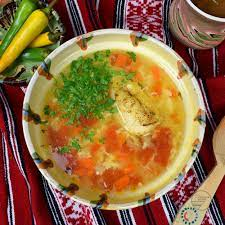

Ciorba taraneasca de pui

Descriere
Ingrediente
- 1 pui mediu
- 1 ceapa medie
- 2-3 morcovi
- 1 radacina patrunjel
- 1/2 telina
- 1 ardei gras
- 1 mana fasole pastai
- 2-3 linguri boabe mazare
- 4 rosii
- 2 cartofi taiati in cuburi mari
- 1 cana bors
- 2 crengute leustean
Preparare
- Spalam puiul, il taiem in bucati si il punem la fiert.
- Taiem ceapa marunt si o calim foarte putin.
- Taiem zarzavaturile julien sau cubulete si le calim impreuna cu ceapa.
- Cand carnea este aproape fiarta, o scoatem si rupem fasii de pe pieptul de pui, apoi reintoarcem carnea in oala.
- Punem zarzavaturile calite, mazarea, fasolea verde si cartofii in oala.
- Fierbem borsul si il adaugam in oala.
- Lasam ciorba sa fiarba, si adaugam rosiile oparite si decojite.
- Dupa ce toate legumele si carnea sunt fierte, adaugam sare si leustean dupa gust.